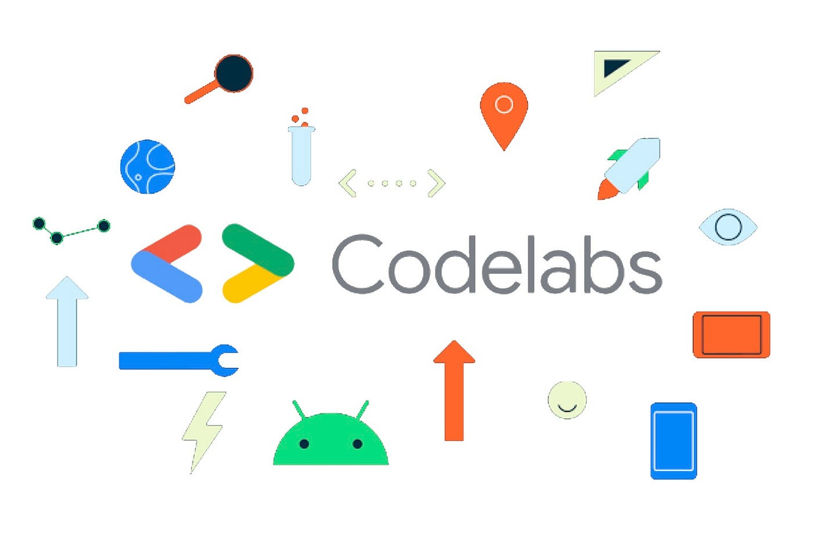
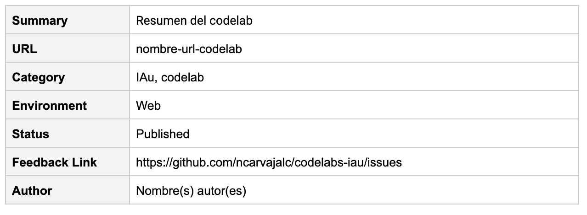
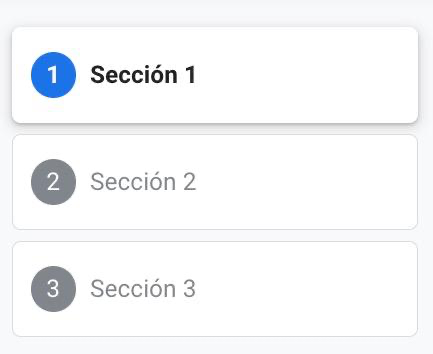
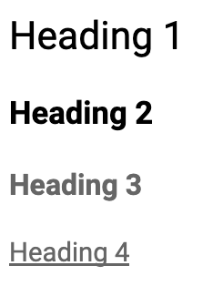
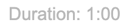
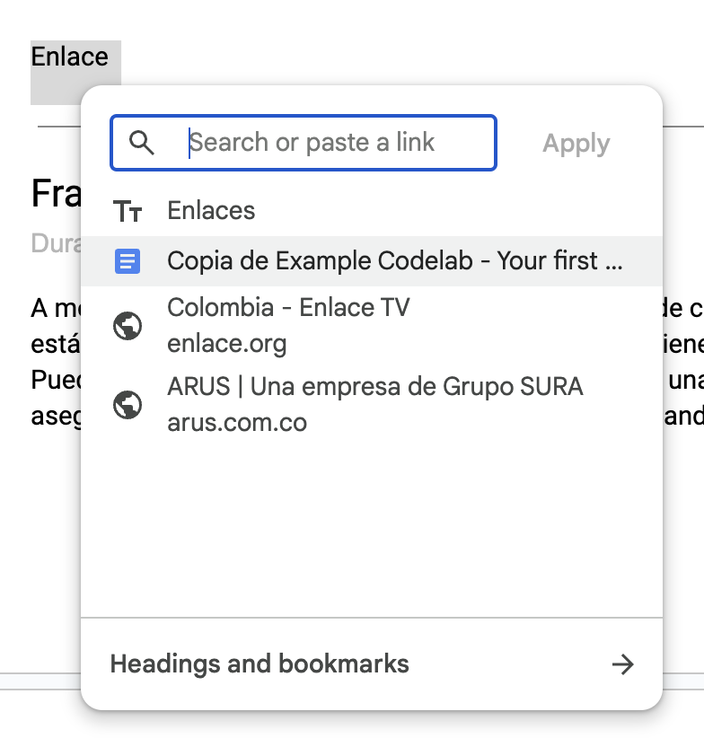

Este tutorial describe cómo crear un codelab usando Google Docs. Va a explicar los estilos de texto en Google Docs y cómo usarlos para crear un codelab.
Un codelab puede crearse de varias maneras:
- Usando un Google Docs
- Usando un archivo Markdown
En este codelab vamos a usar la primera opción y crear nuestro codelab usando un archivo de Google Docs. Esto nos permite crear un codelab sin necesidad de aprender Markdown y nos permite almacenarlo en Google Drive para que pueda ser usado para un tutorial.
Recursos
- Este codelab está basado en el siguiente codelab: Enlace al Codelab
- El enlace del archivo de Google Docs en el que se hizo este codelab: Enlace al documento
- El repositorio que contiene la herramienta claat que se usa para crear codelabs: Google CodeLabs Tools Github
- Foro para hacer preguntas sobre codelabs y discutir funcionalidades futuras: Google Group for CodeLab Authors
Crea un archivo de Google Docs
Puedes crear un archivo en blanco o puedes crear una copia de este documento de plantilla como punto de partida y luego modificar iterativamente los metadatos y el contenido a tu gusto, siguiendo las reglas de formato que se describirán a continuación.
Descarga la extensión Preview Codelab Chrome extension
Para la iniciativa IAu, vamos a utilizar la extensión Preview Codelab Chrome Extension en tu navegador. Esta es una configuración que solo debes hacer una vez y te servirá para todos los codelabs que crees en el futuro.
Para hacer preview de un codelab debes:
- Descargar la extensión en tu navegador
- Dar click en el botón de extensiones de Google Chrome y activar la extensión cuando estés en la pestaña del archivo de Google Docs
En los siguientes pasos, encontrarás la Referencia de Formato para crear tu primer codelab
Hay algunos metadatos adicionales que son necesarios para publicar correctamente un codelab. Estos metadatos deben agregarse como una tabla de dos columnas en cualquier lugar antes del primer paso del codelab. Por ejemplo:

Tienes la libertad de agregar tus propios metadatos aquí si lo deseas, pero ciertos pares clave/valor están reservados para características específicas de publicación del codelab. La lista actual de términos de metadatos reservados es:
- Summary: Un breve resumen del codelab que se mostrará en la interfaz de usuario del navegador de codelabs.
- URL: El sufijo de la URL donde se publicará este codelab, es decir, la ruta después de la URL raíz a una colección de codelabs. Por ejemplo, el sitio de Google Codelabs usa codelabs.developers.google.com/codelabs/ como raíz y este valor se añade a esa base para formar la URL única de un codelab determinado.
- Category: Una categoría única de nivel superior que se utilizará para agrupar codelabs por plataforma. Las categorías suelen ser curadas por una organización (por ejemplo, tenemos un conjunto que usamos para el sitio de Google Codelabs), pero cada editor es libre de usar este valor a su discreción.
- Environment: Una etiqueta que permite usar algunos codelabs para un entorno específico. Todos los codelabs se predeterminan al entorno "Web", pero dadas algunas restricciones de hardware, podríamos querer generarlos solo para un entorno "Kiosk" donde sabemos que las personas tendrán el hardware adecuado.
- Status: Uno o más de (Draft, Published, Deprecated, Hidden) para indicar el progreso y si el codelab está listo para ser publicado. "Oculto" implica que el codelab es para uso restringido, debe estar disponible solo por URL directa y no debe aparecer en la página de índice principal.
- Author:: Esto te permite especificar el nombre completo del/los creador(es) del codelab
Cada documento de codelab debe usar el estilo de párrafo de Heading 1 para delinear los pasos del codelab. A su vez, estos encabezados se usarán para crear automáticamente una Tabla de Contenidos que muestra al estudiante exactamente dónde se encuentra en el codelab y le permite saltar a cualquier paso.
La tabla de contenidos desaparece para navegadores más pequeños, pero sigue estando disponible desde el menú de hamburguesa.
Por ejemplo, si en tu Google Docs escribiste tres títulos con estilo Heading 1:
Sección 1
Sección 2
Seccion 3
Tu tabla de contenidos se debería ver así:

Dentro de los pasos de tu codelab, debes usar los estilos de párrafo Heading 2, Heading 3 y Heading 4 para organizar tu contenido. Además, si deseas incluir alguna información administrativa adicional al principio de tu codelab, puedes usar libremente los estilos de párrafo Heading 2, Heading 3 y Heading 4 y no aparecerán en el codelab siempre que aparezcan antes del primer Heading 1. Los respectivos estilos se ven así:

Muchos participantes no están completamente comprometidos a completar un codelab cuando lo comienzan. Una de las formas en que podemos mantenerlos en nuestro codelab es dando estimaciones precisas sobre cuánto esfuerzo adicional se requiere para completar el codelab en cada paso.
Para agregar esta función a tu codelab, simplemente anota cada paso en tu documento de codelab con una Duration que use el estilo dark grey 1. Por ejemplo:

Eso es todo. El marco del codelab hará todo lo demás por ti. Si olvidas anotar un paso con una duración, el valor predeterminado es 1:00. Además, si el último paso de tu codelab es solo una página de felicitaciones, debes establecer la duración de ese paso en 0.
En su mayor parte, no importa qué fuentes uses en tu archivo de Google Docs; todo se formateará usando Roboto en el codelab final.
Hay algunas formas simples de agregar énfasis a ciertas partes del texto. Algunas de ellas son:
- Texto en negrita
- Texto en cursiva
- Pasajes de texto formateados con la fuente
Courier New
Las listas en tu codelab aparecerán siempre que insertes una viñeta o empieces a numerar una lista en tu archivo de Google Docs. Por ejemplo en una lista numerada:
- Primer elemento
- Segundo elemento
- Tercer elemento
O en una lista con viñetas:
- Primer elemento
- Segundo elemento
- Tercer elemento
Las imágenes en tu codelab deberían funcionar sin problemas al pegarlas en tu documento. Puedes redimensionarlas en tu documento de codelab y ese ancho se aplicará como un ancho máximo en la imagen en el marcado del codelab para que las imágenes tengan el mismo tamaño relativo al texto, pero también se adapten adecuadamente a navegadores más pequeños. Por ejemplo:
Los videos de Youtube se pueden incrustar de esta forma:
- Agrega una imagen en el documento. La imagen puede ser una captura de pantalla del video, por ejemplo, pero no importa realmente ya que no se mostrará sino que será reemplazada por el video incrustado.
- Agrega un "Texto Alternativo" a la imagen haciendo Cmd+Opt+Y o clic derecho > "Texto Alternativo..."
- Pon un enlace de video de Youtube en el campo Descripción del Texto Alternativo en el formato https://www.youtube.com/watch?v=[video_ID].
Para insertar un enlace a una URL externa solo debes crear un hipervínculo en tu documento de Google Docs. Esto se hace seleccionando el texto que quieres que se convierta en el enlace, dando click derecho, seleccionando la opción "Insert Link" y pegando el link. Por ejemplo:

Que se ve así en el codelab:
A menudo sucede que tendrás instrucciones de línea de comandos o mensajes de registro que están formateados con una fuente monoespaciada y tienen espacios en blanco predefinidos. Puedes agregar estas secciones a tu codelab creando una tabla de una sola celda y asegurándote de que todo el texto esté formateado usando la fuente Consolas. Por ejemplo:
Ejemplo de un fragmento de línea de comandos
Los fragmentos de código con resaltado de sintaxis se pueden agregar creando una tabla de una sola celda y asegurándote de que todo el texto esté formateado usando la fuente Courier New.
Cualquier estilo adicional aplicado al código será anulado por el resaltado de sintaxis. Esto significa que eres libre de usar complementos de resaltado de código en tu documento de codelab, pero no tendrán efecto en cómo se resalta el código en el codelab final.
También se recomienda encarecidamente que proporciones un encabezado de Heading 3 directamente sobre tu fragmento de código con el nombre del archivo. Esto ayuda a los usuarios a seguir el origen del código. El marco del codelab también usa la extensión del archivo del encabezado anterior como una pista para cómo resaltar el código.
También se recomienda encarecidamente que hagas que tu encabezado de Heading 3 sea un hipervínculo al archivo real si está disponible en GitHub. En tales casos, se añadirá automáticamente un icono de GitHub al encabezado. Por ejemplo:
nombre_archivo.py
def print_hola_mundo():
print("Hola Mundo")Para información adicional que te gustaría resaltar especialmente en tu codelab, hay dos estilos de cuadros de información:
Se recomienda que mantengas tus cuadros de información limpios, concisos y enfocados en un solo tema.
Puedes facilitar las descargas al incluir botones en tu codelab. Para agregar un botón a tu codelab, simplemente agrega un hipervínculo y asegúrate de que esté resaltado con un fondo dark green 1.
Para generar tu Codelab creado con Google Docs se utiliza la herramienta claat. En la carpeta claat/bin se encuentran los binarios de claat para los sistemas operativos Windows, Linux y MacOS. Si su sistema operativo no es compatible con estos binarios, puede instalar claat desde el siguiente enlace y seguir las instrucciones de instalación.
Para utilizar la herramienta claat, desde la carpeta raíz del proyecto ejecute el siguiente comando:
Configuración en mac
claat/bin/claat-mac help
Configuración en Linux
claat/bin/claat-linux-x86 help
Configuración en Windows
claat\bin\claat-windows-x86.exe help
Para generar un codelab, desde la carpeta raíz del proyecto ejecute el siguiente comando:
Generación en mac
claat/bin/claat-mac export -o codelabs <ID-GOOGLE-DOCS>
Generación en Linux
claat/bin/claat-linux-x86 export -o codelabs <ID-GOOGLE-DOCS>
Generación en Windows
claat\bin\claat-windows-x86.exe export -o codelabs <ID-GOOGLE-DOCS>
Donde 1a2b3c4d5e6f7g8h9i0j
Para generar tu Codelab creado con Google Docs se utiliza la herramienta claat. En la carpeta claat/bin se encuentran los binarios de claat para los sistemas operativos Windows, Linux y MacOS. Si tu sistema operativo no es compatible con estos binarios, puedes instalar claat desde el siguiente enlace y seguir las instrucciones de instalación.
Una vez que hayas terminado de escribir tu codelab, puedes publicarlo en la web para que otros puedan acceder a él. Para hacer esto, debes subir el codelab a un servidor web o a un repositorio de GitHub y compartir el enlace con otros.
En el caso de IAu vamos a hacer uso de GitHub Pages, que nos permite alojar sitios web estáticos de forma gratuita.
El repositorio se configuró para que cada vez que se haga un push a la rama main, se actualice el sitio web de GitHub Pages. Es importante que el codelab esté en la carpeta codelabs del repositorio para que se genere correctamente.
Una vez que hayas subido tu codelab a GitHub, puedes compartir el enlace con otros para que puedan acceder a él.
Pull request
Para poder publicar tu codelab, debes hacer un pull request al repositorio ncarvajalc/codelabs-iau con los cambios que has hecho. Una vez que el pull request sea aprobado y se haya fusionado con la rama `main`, tu codelab estará disponible en la web.
¡Has aprendido a crear tu propio codelab!